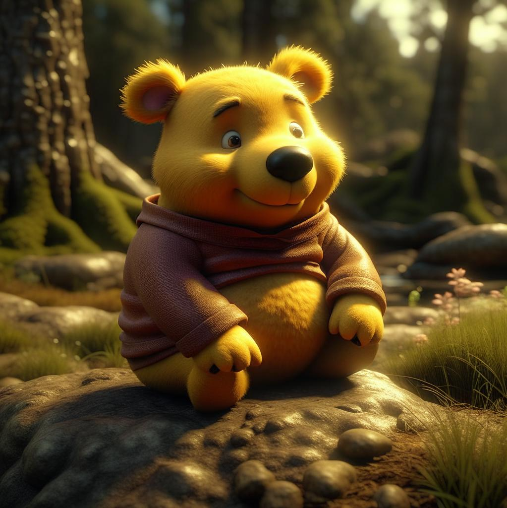

Винни-Пух и все-все-все
Алан Милн
Глава первая, в которой мы знакомимся с Винни-Пухом и несколькими пчёлами
Винни-Пух спускался по лестнице вслед за своим другом Кристофером Робином, головой вниз, пересчитывая ступеньки собственным затылком: бум-бум-бум. Другого способа сходить с лестницы он пока не знает. Иногда ему, правда, кажется, что можно бы найти какой-то другой способ, если бы он только мог на минутку перестать бумкать и как следует сосредоточиться. Но увы - сосредоточиться-то ему и некогда.
Как бы то ни было, вот он уже спустился и готов с вами познакомиться.
- Винни-Пух. Очень приятно!
Вас, вероятно, удивляет, почему его так странно зовут, а если вы знаете английский, то вы удивитесь еще больше.
Это необыкновенное имя подарил ему Кристофер Робин. Надо вам сказать, что когда-то Кристофер Робин был знаком с одним лебедем на пруду, которого он звал Пухом. Для лебедя это было очень подходящее имя, потому что если ты зовешь лебедя громко: "Пу-ух! Пу-ух!" - а он не откликается, то ты всегда можешь сделать вид, что ты просто понарошку стрелял; а если ты звал его тихо, то все подумают, что ты просто подул себе на нос. Лебедь потом куда-то делся, а имя осталось, и Кристофер Робин решил отдать его своему медвежонку, чтобы оно не пропало зря.
А Винни - так звали самую лучшую, самую добрую медведицу в зоологическом саду, которую очень-очень любил Кристофер Робин. А она очень-очень любила его. Ее ли назвали Винни в честь Пуха, или Пуха назвали в ее честь - теперь уже никто не знает, даже папа Кристофера Робина. Когда-то он знал, а теперь забыл.
Словом, теперь мишку зовут Винни-Пух, и вы знаете почему.
Иногда Винни-Пух любит вечерком во что-нибудь поиграть, а иногда, особенно когда папа дома, он больше любит тихонько посидеть у огня и послушать какую-нибудь интересную сказку.
В этот вечер...
- Папа, как насчет сказки? - спросил Кристофер Робин.
- Что насчет сказки? - спросил папа.
- Ты не мог бы рассказать Винни-Пуху сказочку? Ему очень хочется!
- Может быть, и мог бы, - сказал папа. - А какую ему хочется и про кого?
- Интересную, и про него, конечно. Он ведь у нас ТАКОЙ медвежонок!
- Понимаю, - сказал папа.
- Так, пожалуйста, папочка, расскажи!
- Попробую, - сказал папа.
И он попробовал.
Давным-давно - кажется, в прошлую пятницу - Винни-Пух жил в лесу один-одинешенек, под именем Сандерс.
- Что значит "жил под именем"? - немедленно спросил Кристофер Робин.
- Это значит, что на дощечке над дверью было золотыми буквами написано "Мистер Сандерс", а он под ней жил.
- Он, наверно, и сам этого не понимал, - сказал Кристофер Робин.
- Зато теперь понял, - проворчал кто-то басом.
- Тогда я буду продолжать, - сказал папа.
Вот однажды, гуляя по лесу, Пух вышел на полянку. На полянке рос высокий-превысокий дуб, а на самой верхушке этого дуба кто-то громко жужжал: жжжжжжж...
Винни-Пух сел на траву под деревом, обхватил голову лапами и стал думать.
Сначала он подумал так: "Это - жжжжжж - неспроста! Зря никто жужжать не станет. Само дерево жужжать не может. Значит, тут кто-то жужжит. А зачем тебе жужжать, если ты - не пчела? По-моему, так! "
Потом он еще подумал-подумал и сказал про себя: "А зачем на свете пчелы? Для того, чтобы делать мед! По-моему, так!"
Тут он поднялся и сказал:
- А зачем на свете мед? Для того, чтобы я его ел! По-моему, так, а не иначе!
И с этими словами он полез на дерево.
Он лез, и лез, и все лез, и по дороге он пел про себя песенку, которую сам тут же сочинил. Вот какую:
Мишка очень любит мед!
Почему? Кто поймет?
В самом деле, почему
Мед так нравится ему?
Вот он влез еще немножко повыше... и еще немножко... и еще совсем-совсем немножко повыше... И тут ему пришла на ум другая песенка-пыхтелка:
Если б мишки были пчелами,
То они бы нипочем
Никогда и не подумали
Так высоко строить дом;
И тогда (конечно, если бы
Пчелы - это были мишки!)
Нам бы, мишкам, было незачем
Лазить на такие вышки!
По правде говоря, Пух уже порядком устал, поэтому Пыхтелка получилась такая жалобная. Но ему осталось лезть уже совсем-совсем-совсем немножко. Вот стоит только влезть на эту веточку - и...
ТРРАХ!
- Мама! - крикнул Пух, пролетев добрых три метра вниз и чуть не задев носом о толстую ветку.
- Эх, и зачем я только... - пробормотал он, пролетев еще метров пять.
- Да ведь я не хотел сделать ничего пло... - попытался он объяснить, стукнувшись о следующую ветку и перевернувшись вверх тормашками.
- А все из-за того, - признался он наконец, когда перекувырнулся еще три раза, пожелал всего хорошего самым нижним веткам и плавно приземлился в колючий-преколючий терновый куст, - все из-за того, что я слишком люблю мед! Мама!
Пух выкарабкался из тернового куста, вытащил из носа колючки и снова задумался. И самым первым делом он подумал о Кристофере Робине.
- Обо мне? - переспросил дрожащим от волнения голосом Кристофер Робин, не смея верить такому счастью.
- О тебе.
Кристофер Робин ничего не сказал, но глаза его становились все больше и больше, а щеки все розовели и розовели.
Итак, Винни-Пух отправился к своему другу Кристоферу Робину, который жил в том же лесу, в доме с зеленой дверью.
- Доброе утро, Кристофер Робин! - сказал Пух.
- Доброе утро, Винни-Пух! - сказал мальчик.
- Интересно, нет ли у тебя случайно воздушного шара?
- Воздушного шара?
- Да, я как раз шел и думал: "Нет ли у Кристофера Робина случайно воздушного шара?" Мне было просто интересно.
- Зачем тебе понадобился воздушный шар?
Винни-Пух оглянулся и, убедившись, что никто не подслушивает, прижал лапу к губам и сказал страшным шепотом:
- Мед.
- Что-о?
- Мед! - повторил Пух.
- Кто же это ходит за медом с воздушными шарами?
- Я хожу! - сказал Пух.
Ну, а как раз накануне Кристофер Робин был на вечере у своего друга Пятачка, и там всем гостям дарили воздушные шарики. Кристоферу Робину достался большущий зеленый шар, а одному из Родных и Знакомых Кролика приготовили большой-пребольшой синий шар, но этот Родственник и Знакомый его не взял, потому что сам он был еще такой маленький, что его не взяли в гости, поэтому Кристоферу Робину пришлось, так и быть, захватить с собой оба шара - и зеленый и синий.
- Какой тебе больше нравится? - спросил Кристофер Робин.
Пух обхватил голову лапами и задумался глубоко-глубоко.
- Вот какая история, - сказал он. - Если хочешь достать мед - главное дело в том, чтобы пчелы тебя не заметили. И вот, значит, если шар будет зеленый, они могут подумать, что это листик, и не заметят тебя, а если шар будет синий, они могут подумать, что это просто кусочек неба, и тоже тебя не заметят. Весь вопрос - чему они скорее поверят?
- А думаешь, они не заметят под шариком тебя?
- Может, заметят, а может, и нет, - сказал Винни-Пух. - Разве знаешь, что пчелам в голову придет? - Он подумал минутку и добавил: - Я притворюсь, как будто я маленькая черная тучка. Тогда они не догадаются!
- Тогда тебе лучше взять синий шарик, - сказал Кристофер Робин.
И вопрос был решен.
Друзья взяли с собой синий шар, Кристофер Робин, как всегда (просто на всякий случай), захватил свое ружье, и оба отправились в поход.
Винни-Пух первым делом подошел к одной знакомой луже и как следует вывалялся в грязи, чтобы стать совсем-совсем черным, как настоящая тучка. Потом они стали надувать шар, держа его вдвоем за веревочку. И когда шар раздулся так, что казалось, вот-вот лопнет, Кристофер Робин вдруг отпустил веревочку, и Винни-Пух плавно взлетел в небо и остановился там-как раз напротив верхушки пчелиного дерева, только немного в стороне.
- Ураааа! - закричал Кристофер Робин.
- Что, здорово? - крикнул ему из поднебесья Винни-Пух. - Ну, на кого я похож?
- На медведя, который летит на воздушном шаре!
- А на маленькую черную тучку разве не похож? - тревожно спросил Пух.
- Не очень.
- Ну ладно, может быть, отсюда больше похоже. А потом, разве знаешь, что придет пчелам в голову!
К сожалению, ветра не было, и Пух повис в воздухе совершенно неподвижно. Он мог чуять мед, он мог видеть мед, но достать мед он, увы, никак не мог.
Спустя некоторое время он снова заговорил.
- Кристофер Робин! - крикнул он шепотом.
- Чего?
- По-моему, пчелы что-то подозревают!
- Что именно?
- Не знаю я. Но только, по-моему, они ведут себя подозрительно!
- Может, они думают, что ты хочешь утащить у них мед?
- Может, и так. Разве знаешь, что пчелам в голову придет!
Вновь наступило недолгое молчание. И опять послышался голос Пуха:
- Кристофер Робин!
- Что?
- У тебя дома есть зонтик?
- Кажется, есть.
- Тогда я тебя прошу: принеси его сюда и ходи тут с ним взад и вперед, а сам поглядывай все время на меня и приговаривай: "Тц-тц-тц, похоже, что дождь собирается!" Я думаю, тогда пчелы нам лучше поверят.
Ну, Кристофер Робин, конечно, рассмеялся про себя и подумал: "Ах ты, глупенький мишка!" - но вслух он этого не сказал, потому что он очень любил Пуха.
И он отправился домой за зонтиком.
- Наконец-то! - крикнул Винни-Пух, как только Кристофер Робин вернулся. - А я уже начал беспокоиться. Я заметил, что пчелы ведут себя совсем подозрительно!
- Открыть зонтик или не надо?
- Открыть, но только погоди минутку. Надо действовать наверняка. Самое главное - это обмануть пчелиную царицу. Тебе ее оттуда видно?
- Нет.
- Жаль, жаль. Ну, тогда ты ходи с зонтиком и говори: "Тц-тц-тц, похоже, что дождь собирается", а я буду петь специальную Тучкину Песню - такую, какую, наверно, поют все тучки в небесах... Давай!
Кристофер Робин принялся расхаживать взад и вперед под деревом и говорить, что, кажется, дождь собирается, а Винни-Пух запел такую песню:
Я Тучка, Тучка, Тучка,
А вовсе не медведь,
Ах, как приятно Тучке
По небу лететь!
Ах, в синем-синем небе
Порядок и уют -
Поэтому все Тучки
Так весело поют!
Но пчелы, как ни странно, жужжали все подозрительнее и подозрительнее. Многие из них даже вылетели из гнезда и стали летать вокруг Тучки, когда она запела второй куплет песни. А одна пчела вдруг на минутку присела на нос Тучки и сразу же снова взлетела.
- Кристофер - ай! - Робин! - закричала Тучка.
- Что?
- Я думал, думал и наконец все понял. Это неправильные пчелы!
- Да ну?
- Совершенно неправильные! И они, наверно, делают неправильный мед, правда?
- Ну да?
- Да. Так что мне, скорей всего, лучше спуститься вниз.
- А как? - спросил Кристофер Робин.
Об этом Винни-Пух как раз еще и не подумал. Если он выпустит из лап веревочку, он упадет и опять бумкнет. Эта мысль ему не понравилась. Тогда он еще как следует подумал и потом сказал:
- Кристофер Робин, ты должен сбить шар из ружья. Ружье у тебя с собой?
- Понятно, с собой, - сказал Кристофер Робин. - Но если я выстрелю в шарик, он же испортится!
- А если ты не выстрелишь, тогда испорчусь я, - сказал Пух.
Конечно, тут Кристофер Робин сразу понял, как надо поступить. Он очень тщательно прицелился в шарик и выстрелил.
- Ой-ой-ой! - вскрикнул Пух.
- Разве я не попал? - спросил Кристофер Робин.
- Не то чтобы совсем не попал, - сказал Пух, - но только не попал в шарик!
- Прости, пожалуйста, - сказал Кристофер Робин и выстрелил снова.
На этот раз он не промахнулся. Воздух начал медленно выходить из шарика, и Винни-Пух плавно опустился на землю.
Правда, лапки у него совсем одеревенели, оттого что ему пришлось столько времени висеть, держась за веревочку. Целую неделю после этого происшествия он не мог ими пошевелить, и они так и торчали кверху. Если ему на нос садилась муха, ему приходилось сдувать ее: "Пухх! Пуххх!"
И, может быть - хотя я в этом не уверен, - может быть, именно тогда-то его и назвали Пухом.
- Сказке конец? - спросил Кристофер Робин.
- Конец этой сказке. А есть и другие.
- Про Пуха и про меня?
- И про Кролика, про Пятачка, и про всех остальных. Ты сам разве не помнишь?
- Помнить-то я помню, но когда хочу вспомнить, то забываю...
- Ну, например, однажды Пух и Пятачок решили поймать Слонопотама...
- А поймали они его?
- Нет.
- Где им! Ведь Пух совсем глупенький. А я его поймал?
- Ну, услышишь - узнаешь.
Кристофер Робин кивнул.
- Понимаешь, папа, я-то все помню, а вот Пух забыл, и ему очень-очень интересно послушать опять. Ведь это будет настоящая сказка, а не просто так... вспоминание.
- Вот и я так думаю.
Кристофер Робин глубоко вздохнул, взял медвежонка за заднюю лапу и поплелся к двери, волоча его за собой. У порога он обернулся и сказал:
- Ты придешь посмотреть, как я купаюсь?
- Наверно, - сказал папа.
- А ему не очень было больно, когда я попал в него из ружья?
- Ни капельки, - сказал папа.
Мальчик кивнул и вышел, и через минуту папа услышал, как Винни-Пух поднимается по лесенке: бум-бум-бум.
Продолжение следует